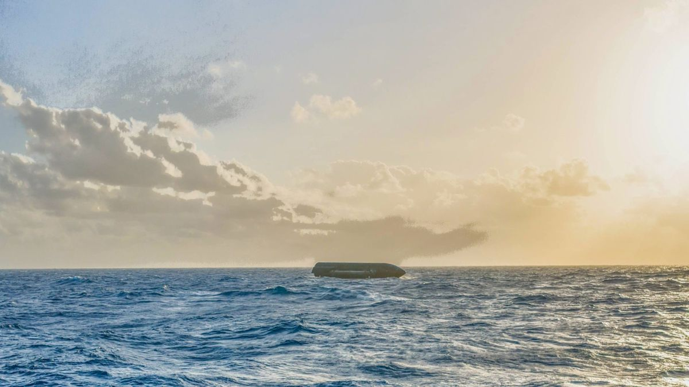

Starship à la dérive : contre toute attente, SpaceX a tracté sa fusée géante jusqu’à une île

🔥 Top produits tech du moment
Publicité — Liens de partenariat Amazon : une commission peut être reversée, sans surcoût pour vous.
L'actualité tech ne cesse d'évoluer. Nouveaux produits, acquisitions, découvertes : chaque jour apporte son lot d'informations importantes pour comprendre le monde numérique de demain.
Ce qu'il faut retenir
Alors qu'on craignait de la voir sombrer dans l’océan Indien, la fusée géante de SpaceX flotte toujours.
Des clichés pris par un photographe sur l'île Christmas révèlent que le Ship 40 a été remorqué avec succès vers ce territoire australien.
Pourquoi c'est important
Cette information pourrait avoir des répercussions sur tout le secteur technologique. Elle concerne directement les utilisateurs de technologies numériques et mérite d'être suivie de près dans les prochaines semaines. Starship à la dérive : contre toute attente, SpaceX a tracté sa fusée géante jusqu’à une île est ainsi un signal à prendre en compte pour comprendre les évolutions du secteur.
En résumé
Retenez l'essentiel : Starship à la dérive : contre toute attente, SpaceX a tracté sa fusée géante jusqu’à une île. Cette actualité a été rapportée par Numerama. Nous continuerons de suivre ce sujet et de vous tenir informés des prochaines évolutions.
Source : Numerama